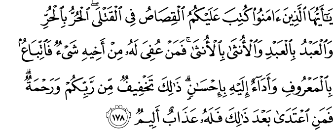

গত কয়েক শতকে কিছু মনীষী যেমন গান্ধী, টলস্টয় এসে অপরাধীদেরকে করুণা দেখানো এবং হত্যাকারীদেরকে সোজা ফাঁসি না দিয়ে তাদেরকে সংশোধন করার সুযোগ করে দেওয়ার জন্য অনেক ‘মহৎ উদ্যোগ’ নিয়ে গেছেন।[৭] তাদের অধ্যবসায়ের ফলাফল: আজকে পশ্চিমা দেশগুলোতে এমন জটিল সব আইন তৈরি হয়েছে যে, হত্যাকারীরা আজকাল হত্যা করে ফাঁসি পাওয়ার পরিবর্তে আইনের জটিল গলিঘুপছি দিয়ে বেরিয়ে এসে হয় মানসিক রোগী উপাধি পেয়ে অত্যাধুনিক ফাইভ-স্টার হোটেলের মতো হাসপাতালে থেকে চিকিৎসা পাচ্ছে, না হয় থ্রি-স্টার হোটেলের মতো কারাগারে তিনবেলা খাবার, নিজের ব্যক্তিগত কক্ষ, সকালে-বিকালে খেলাধুলার ব্যবস্থা পাচ্ছে। এইসব কয়েদী, যাদের ফাঁসি হয়ে যাওয়ার কথা, ফাঁসি না পেয়ে জনগণের কোটি কোটি টাকার ট্যাক্সের টাকায় নিশ্চিন্ত জীবন পার করছে। এদের চাকরি-ব্যবসা করতে হয় না, পরিবার চালাতে হয় না, সমাজের কোনো কল্যাণে অবদান রাখতে হয় না।
মানুষকে আইন বানানোর দায়িত্ব দেওয়া হলে আইন প্রণেতাদের উর্বর মস্তিস্ক থেকে কী বের হয়, তার চমৎকার উদাহরণ হচ্ছে আমেরিকার আইন। আজকে আমেরিকার প্রেসিডেন্ট ২০ লক্ষ কয়েদী নিয়ে কী করবেন তা বুঝতে পারছেন না। লক্ষ লক্ষ কয়েদী পালার বিশাল খরচ জোগান দিতে তিনি হিমশিম খাচ্ছেন।[৩২০] এমনকি বিল ক্লিনটন সবার সামনে স্বীকার করছেন এত বিপুল পরিমাণের কয়েদী জেলে রাখার জন্য তিনি যে সিদ্ধান্ত নিয়েছিলেন, তা ভুল সিদ্ধান্ত ছিল।[৩২১]
অথচ আল্লাহ تعالى আমাদেরকে এমন এক আইন দিয়েছেন, যার বাস্তবায়ন হলে, কেউ মানুষকে হত্যা করার আগে হাজার বার ভেবে দেখবে এবং হত্যাকারীদের পুষতে গিয়ে দেশের জনগণকে কোটি টাকার ট্যাক্স গুনতে হবে না, দেশের বিপুল পরিমাণ সম্পত্তি নষ্ট হবে না, নিহতের পরিবার সুষ্ঠু বিচার পাবে—
{kind=link}
মুমিনরা, তোমাদেরকে আদেশ করা হয়েছে অন্যায়ভাবে হত্যার বিরুদ্ধে অনুরূপ প্রতিশোধ নিতে— স্বাধীন ব্যক্তির বদলে স্বাধীন ব্যক্তি, দাসের বদলে দাস, নারীর বদলে নারী। তবে নিহতের নিকটজন যদি হত্যাকারীকে ক্ষমা করে ছেড়ে দেয়, তাহলে ন্যায্য বিনিময় নির্ধারণ করবে এবং হত্যাকারী তা সবচেয়ে ভালোভাবে পরিশোধ করবে। তোমাদের প্রতিপালক তোমাদের জন্য সহজ করে দিয়েছেন এবং তোমাদেরকে করুণা করেছেন। কিন্তু এরপরেও কেউ যদি বাড়াবাড়ি করে, তাহলে তাকে প্রচণ্ড কষ্টের শাস্তি দেওয়া হবে। [আল-বাক্বারাহ ১৭৮]
{kind=link}
কুর’আনের বিধান অনুসারে হত্যাকারীকে আইনের সহায়তায় ঠিক সেভাবেই হত্যা করা হবে, যেভাবে সে হত্যা করেছে। তা না হলে কোনো শাশুড়ি তার বউয়ের গায়ে তেল ঢেলে আগুন জ্বালিয়ে মারবে, আর সেই শাশুড়িকে এয়ারকন্ডিশন্ড রুমে নিয়ে চেয়ারে বসিয়ে শক দিয়ে সবচেয়ে কম সময়ে, কম কষ্টে মারা হবে। কোনো স্বামী তার স্ত্রীকে এসিড মেরে ঝলসে মারবে, আর সেই স্বামীকে যাবজ্জীবন কারাদণ্ড দিয়ে সরকারের টাকায় জেলে পোষা হবে। কোনো রাজনৈতিক দলের ক্যাডার রাস্তায় কাউকে অনেকক্ষণ ধরে কুপিয়ে মারলে, তাকে ত্রিশ সেকেন্ডের ফাঁসি দিয়ে পার করে দেওয়া হবে। কেউ প্লেন থেকে বোমা মেরে নিরপরাধ মানুষকে ছিন্নভিন্ন করে মেরে ফেললে, তাকে একটা ফাঁসি দিয়ে দ্রুত মেরে ফেলা হবে। —এগুলো কোনো ন্যায়বিচার হলো না। ন্যায়বিচার যখন প্রতিষ্ঠিত হয় না, তখন কেউ হত্যার চিন্তা করার আগে হাজার বার ভেবে দেখে না যে, সে যেভাবে নিরপরাধ মানুষকে হত্যা করার পরিকল্পনা করছে, ঠিক সেই অবস্থায় যখন তাকেও মারা হবে, তখন তার কষ্টটা কতখানি হবে। যার ফলে এরপরে সে যখন হাতে তেলের ক্যান, ছুরি, বন্দুক, বা প্লেনের কন্ট্রোল নেয়, তখন তার আত্মা শুকিয়ে যায় না।
আমি ওদেরকে আদেশ করেছি যে, প্রাণের বদলে প্রাণ, চোখের বদলে চোখ, নাকের বদলে নাক, কানের বদলে কান, দাঁতের বদলে দাঁত, যখমের বদলে একই যখম। কিন্তু কেউ যদি ক্ষমা করে দেয়, তাহলে তার এই ক্ষমা তারই গুনাহের মাফ হিসেবে গোনা হবে। আল্লাহ যা পাঠিয়েছেন সে অনুসারে যারা বিচার করে না, ওরাই হচ্ছে চরম দুর্নীতিবাজ। [আল-মায়িদাহ ৪:৪৫]
এক ইয়াহূদী একটি দাসীর মাথা দু’টি পাথরের মাঝখানে রেখে পিষে দিয়েছিল। তাকে জিজ্ঞেস করা হলো, কে তোমাকে এরূপ করেছে? অমুক ব্যক্তি, অমুক ব্যক্তি? যখন জনৈক ইয়াহূদীর নাম বলা হল- তখন সে দাসী মাথার দ্বারা হ্যাঁ সূচক ইশারা করল। ইয়াহূদীকে ধরে আনা হল। সে অপরাধ স্বীকার করলে নবী (সাল্লাল্লাহু ‘আলাইহি ওয়া সাল্লাম) তার সম্পর্কে নির্দেশ দিলেন। তখন তার মাথা দু’টি পাথরের মাঝখানে রেখে পিষে দেয়া হল। [সাহিহ বুখারি বই ৪৪, হাদিস ৪]
হত্যাকারীকে ‘সুন্দরভাবে’ শাস্তি দেওয়ার যত সব আধুনিক পদ্ধতি আজকে আবিষ্কার হয়েছে, সেগুলো কোনো ন্যায়বিচার নয়। বরং এই সব দ্রুত, কম কষ্টের ফাঁসি, শক বা বিষ ইনজেকশনের পদ্ধতি হত্যাকারীদের মন থেকে নিজের মৃত্যু যন্ত্রণার ভয় দূর করে দেয়। ভীষণ যন্ত্রণা পেয়ে নিজের মারা যাওয়ার চিন্তা যখন আর থাকে না, তখন অসুস্থ মনে হত্যা করার নানা ধরণের বিকৃত চিন্তা মাথায় আসে। কিন্তু যখন সে নিজেকেই সেই বিকৃত পদ্ধতিতে মারা যাওয়া কল্পনা করে, তখন সে যতই অসুস্থ মনের হোক, সে সাবধান হয়ে যায়। অসুস্থ মানুষরা সাধারণত নিজেদের স্বার্থের ব্যাপারে বড়ই সচেতন থাকে।[৬]
একারণেই আল্লাহ تعالى এর পরের আয়াতে বলেছেন—
বুদ্ধিমান মানুষেরা শোনো, অনুরূপ প্রতিশোধ জীবন রক্ষা করে, যাতে করে তোমরা সাবধান হতে পারো। [আল-বাক্বারাহ ১৭৯]
{kind=link}
কিসাস বাস্তবায়ন করলে মানুষ বেশি মরবে না, বরং বেশি বাঁচবে। একজন হত্যাকারীর উপর নেওয়া প্রতিশোধ দেখে দশ জন হবু হত্যাকারী ভয়ে সাবধান হয়ে যাবে। মানুষের মনে আল্লাহর تعالى প্রতি ভয় তৈরি হবে। একারণেই আল্লাহ تعالى বলেছেন যে, ক্বিসাস মানুষের ভেতরে তাক্বয়া এনে দেবে।
দুঃখজনকভাবে যখন ইসলামী আইন শাসিত দেশগুলোতে ক্বিসাস প্রয়োগ করে যথাযথ প্রতিশোধ নেওয়া হয়, তখন সারা পৃথিবীর মানবতাবাদীরা তোলপাড় করে ফেলে। তাদের দেখাদেখি অনেক মুসলিমকেও দেখা যায় প্রতিশোধের পদ্ধতিকে বর্বর বলে চিৎকার করতে। পাকিস্তানে যখন এক স্বামী তার স্ত্রীকে এসিড মেরে অন্ধ করে ফেলল এবং পাকিস্তানের আদালত সেই স্বামীর চোখেও এসিড ফোঁটা ফেলে চোখ নষ্ট করে দেওয়ার বিচার দিল, তখন পৃথিবীর সংবাদ মাধ্যমগুলোতে তোলপাড় হয়ে গেল। স্বামীর প্রতি দরদে মানবতাবাদী সংগঠনগুলো এক হয়ে গেল।[৩২২] ইরানে যখন এক লোক এসিড মেরে অন্য একজনের দুই চোখ নষ্ট করে দিল, তারপর আদালত সিদ্ধান্ত নিল অপারেশন করে তার এক চোখ অপসারণ করে উচিত শাস্তি দিতে, তখন সংবাদ মাধ্যমগুলো তা বর্বর, নিষ্ঠুর বলে প্রচার করতে থাকে।[৩২৩] আর সৌদি আরবের আদালতে ক্বিসাসের প্রয়োগের ঘটনাগুলো তো সংবাদমাধ্যমগুলোতে নিয়মিত তাড়িয়ে তাড়িয়ে প্রচার করা হয়। কোনো কারণে অপরাধীর প্রতি সহানুভূতি ঠিকই উথলে ওঠে, কিন্তু ভুক্তভোগী, নিহতের পরিবারের প্রতি সহানুভূতি উবে যায়।
এই আয়াতে قِصَاص ক্বিসাস বা প্রতিশোধ নেওয়ার নির্দেশ দেওয়া হয়েছে। ক্বিসাস অর্থ পথের চিহ্ন অনুসরণ করে চলা, সমতা, ন্যায্যতা।[১৪][১১] কিন্তু এই প্রতিশোধের মানে এই নয় যে, কেউ আইন নিজের হাতে তুলে নিয়ে নিজেই প্রতিশোধ নেবে, কোনো ধরণের বিচারের আগেই। তাকে অবশ্যই আইনের সহায়তা নিয়ে বিচারের পর প্রতিশোধ নিতে হবে।[১২] আইন নিজের হাতে তুলে নিয়ে প্রতিশোধ নেওয়া বিরাট অপরাধ। যতক্ষণ পর্যন্ত বিচার না হচ্ছে এমন বিচারক নিশ্চিত হয়ে আদেশ না করছেন, ততক্ষণ পর্যন্ত ক্বিসাস নেওয়া নিষেধ।
তবে আল্লাহ تعالى আমাদেরকে ক্ষমা করতে উৎসাহিত করেছেন। যদি হত্যাকারীকে নিহতের নিকটজন ক্ষমা করে দেয়, এবং আর্থিক প্রতিদান চায়, তাহলে হত্যাকারীর উপর প্রতিদান দেওয়া বাধ্যতামূলক। এবং সেই প্রতিদান দিতে হবে ইহসান-এর সাথে, অর্থাৎ সবচেয়ে ভালোভাবে। কোনো দেরি করা, কম দেওয়া, অল্প অল্প করে দেওয়া ইত্যাদি ফাঁকিবাজি করা যাবে না। একইসাথে আল্লাহ تعالى বলেছেন যে, প্রতিদান হিসেবে যা চাওয়া হচ্ছে, তা ন্যায় সঙ্গত হতে হবে। بِٱلْمَعْرُوفِ অর্থাৎ এমন কিছু হতে হবে যা সমাজের রীতিনীতি, অর্থনীতি, সংস্কৃতি ইত্যাদি অনুসারে ন্যায্য এবং সুন্দর হয়, কোনো বাড়াবাড়ি, নোংরামি না হয়।[৪][৫]
যদি আল্লাহ تعالى ক্ষমা করার ব্যাপারটি না রাখতেন, শুধুই প্রতিশোধ নেওয়া বাধ্যতামূলক করে দিতেন, তাহলে অনেকের জন্য সমস্যা হয়ে যেত। যেমন, কোনো পরিবারের একমাত্র উপার্জনক্ষম পুরুষকে যদি হত্যা করা হয়, তাহলে তার হত্যার প্রতিশোধ নিলে, সেই পরিবারের অর্থনৈতিক দুরবস্থার কোনো সমাধান হবে না। তারচেয়ে বরং সেই পরিবারের জন্য এটাই ভালো হতে পারে যে, হত্যাকারী তাদেরকে যথেষ্ট পরিমাণে অর্থ দেবে, যেন পরিবার তাদের খরচ চালাতে পারে।
প্রসঙ্গত বলে রাখা প্রয়োজন ক্বিসাস-এর ব্যাপারে যথেষ্ট মতভেদ রয়েছে। যেমন, কোনো মুসলিম অন্য কোনো অমুসলিমকে মারলে ক্বিসাস অনুসারে মুসলিমকে মেরে ফেলা হবে কিনা —এনিয়ে ব্যাপক বিতর্ক এবং মতবিভেদ রয়েছে। হানাফিদের মতে মুসলিমকে মেরে ফেলতে হবে, কারণ ক্বিসাসের আয়াতে কোনো পার্থক্য করতে বলা হয়নি এবং করলে তা অন্যায় হবে। কিন্তু শাফিঈ, হাম্বালি মতে মুসলিমকে হত্যা করা যাবে না। একইসাথে কাউকে প্রতিশোধ নেওয়ার জন্য আগুনে পুড়িয়ে মারা যাবে কিনা এই নিয়েও ব্যাপক মতবিভেদ রয়েছে। হানাফি, শাফিঈদের মতে আগুন ব্যবহার করাতে সম্পূর্ণ নিষেধ না থাকলেও, সেটা না করা ভালো হবে। অন্যদের মতে কোনোভাবেই আগুন ব্যবহার করা যাবে না, কারণ আগুন দিয়ে মানুষকে শাস্তি দেওয়া শুধু আল্লাহর تعالى অধিকার। একারণে ক্বিসাস সম্পর্কে কোনো সিদ্ধান্ত নেওয়ার আগে প্রেক্ষাপট, অপরাধের গুরুত্ব ইত্যাদি ইসলামিক আদালত বিচার-বিবেচনা করে তারপরে শাস্তি নির্ধারণ করে। এটা কোনো হালকা ব্যাপার নয়।
সূত্র:
- [১] নওমান আলি খানের সূরা আল-বাকারাহ এর উপর লেকচার এবং বাইয়িনাহ এর কু’রআনের তাফসীর।
- [২] ম্যাসেজ অফ দা কু’রআন — মুহাম্মাদ আসাদ।
- [৩] তাফহিমুল কু’রআন — মাওলানা মাওদুদি।
- [৪] মা’রিফুল কু’রআন — মুফতি শাফি উসমানী।
- [৫] মুহাম্মাদ মোহার আলি — A Word for Word Meaning of The Quran
- [৬] সৈয়দ কুতব — In the Shade of the Quran
- [৭] তাদাব্বুরে কু’রআন – আমিন আহসান ইসলাহি।
- [৮] তাফসিরে তাওযীহুল কু’রআন — মুফতি তাক্বি উসমানী।
- [৯] বায়ান আল কু’রআন — ড: ইসরার আহমেদ।
- [১০] তাফসীর উল কু’রআন — মাওলানা আব্দুল মাজিদ দারিয়াবাদি
- [১১] কু’রআন তাফসীর — আব্দুর রাহিম আস-সারানবি
- [১২] আত-তাবারি-এর তাফসীরের অনুবাদ।
- [১৩] তাফসির ইবন আব্বাস।
- [১৪] তাফসির আল কুরতুবি।
- [১৫] তাফসির আল জালালাইন।
- [১৬] লুঘাতুল কুরআন — গুলাম আহমেদ পারভেজ।
- [৩২০] Board, E. (2015). The U.S. locks up way too many people. That could change.. Washington Post. Retrieved 12 August 2015, from https://www.washingtonpost.com/opinions/the-us-locks-up-way-too-many-people-that-could-change/2015/07/16/699b65a6-2bf0-11e5-a5ea-cf74396e59ec_story.html
- [৩২১] Pilkington, E. (2015). Bill Clinton: mass incarceration on my watch ‘put too many people in prison’. the Guardian. Retrieved 12 August 2015, from http://www.theguardian.com/us-news/2015/apr/28/bill-clinton-calls-for-end-mass-incarceration
- [৩২২] News.bbc.co.uk,. (2015). BBC NEWS | South Asia | Eye-for-eye in Pakistan acid case . Retrieved 13 August 2015, from http://news.bbc.co.uk/1/hi/world/south_asia/3313207.stm
- [৩২৩] Freerepublic.com,. (2005). Iranian Court Orders Man To Be Blinded. Retrieved 13 August 2015, from http://www.freerepublic.com/focus/f-news/1434247/posts